Qatar Financial Centre is entering a defining phase in its evolution as a global financial hub.
With strong regulatory infrastructure, a growing fintech ecosystem, and increasing global relevance in Islamic finance, the opportunity is no longer limited to building capability — it is to shape global positioning and influence.
The proposed Halalverse Qatar Platform is a QFC-led initiative designed to:
position Qatar as a global hub for Islamic fintech and financial innovation
activate a high-quality ecosystem of institutions, investors, and market participants
create structured pathways for cross-border engagement, partnerships, and capital flow
This is not a series of events.
It is a continuous platform of engagement, designed to strengthen Qatar's global presence and ecosystem relevance.
2 — Strategic Alignment
This initiative directly supports Qatar Financial Centre's broader strategic priorities and Qatar's national economic direction.
It aligns with:
Qatar National Vision 2030
QFC's focus on fintech, Islamic finance, and digital innovation
emerging priorities around digital assets and financial infrastructure
The platform acts as an activation layer for these priorities — translating infrastructure and policy into visible global engagement.
5 — Track Record
A timeline of evolution.
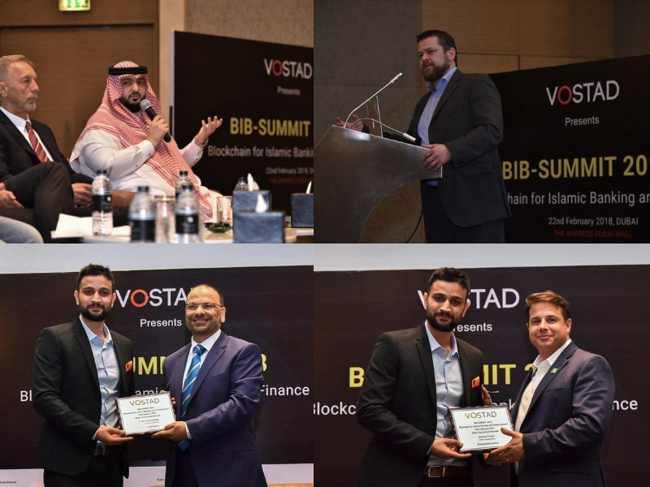
Edition 01
BIB Summit
2018
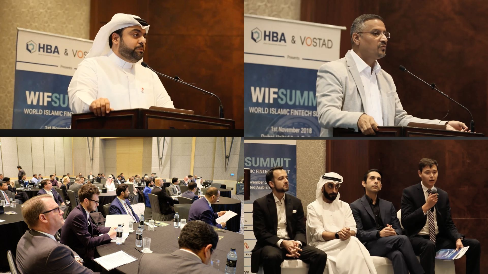
Edition 02
World Islamic Fintech Forum
2019
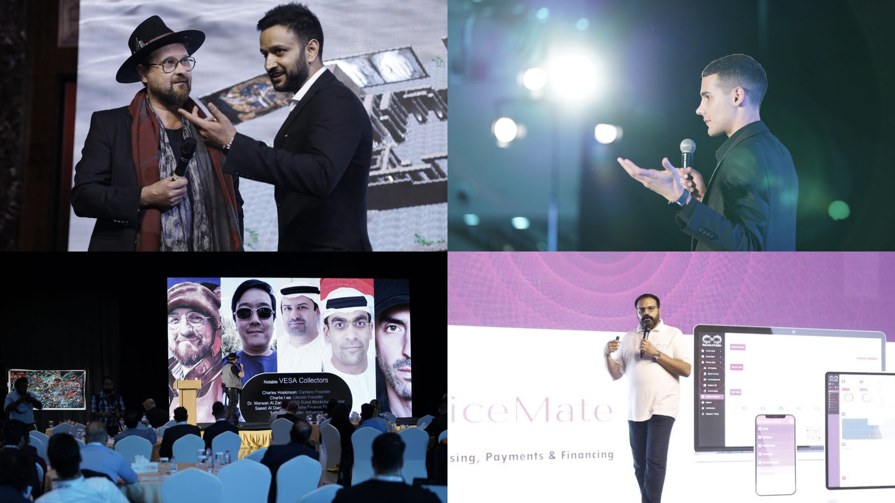
Edition 03
World DeFi & NFT Summit
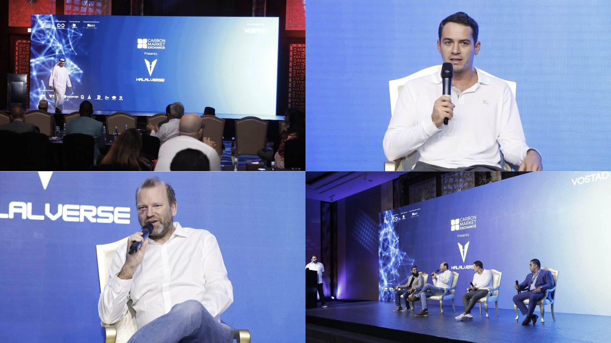
Edition 04
Halalverse — Web3 & Impact
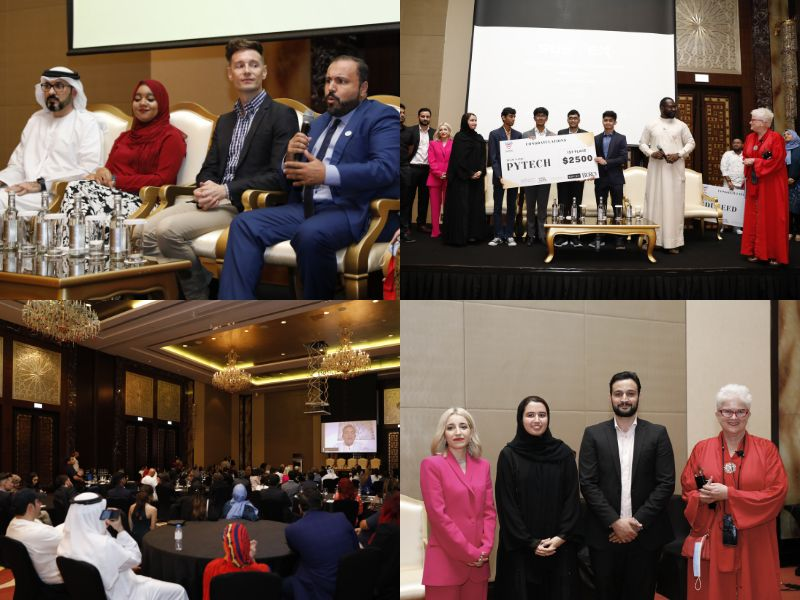
Edition 05
Sustex — Technology & Sustainability
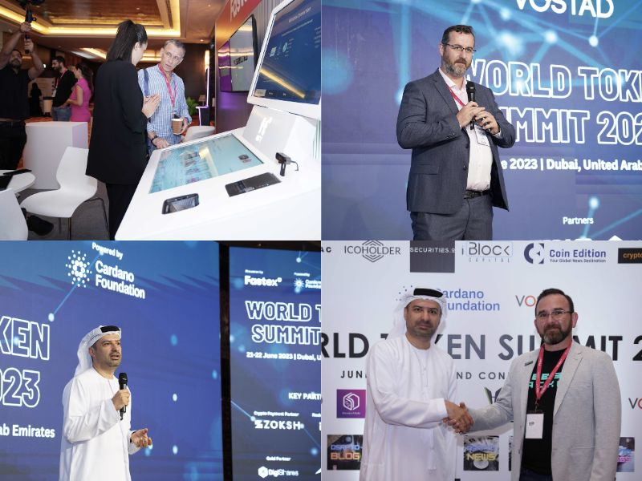
Edition 06
World Token Summit 1.0 — RWA Tokenization
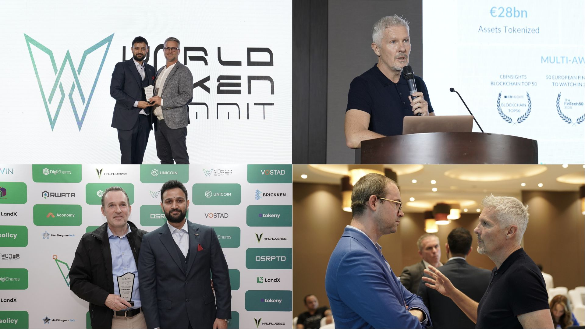
Edition 07
World Token Summit 2.0
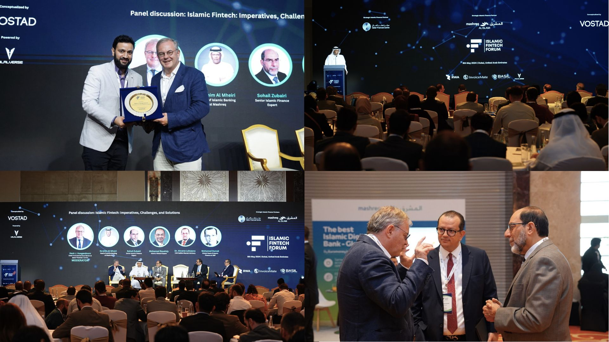
Edition 08
Islamic Fintech Forum 2.0
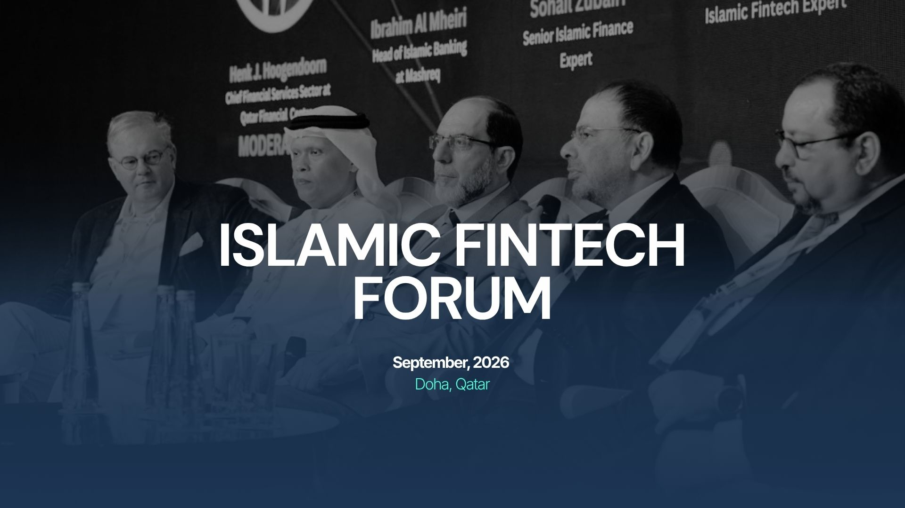
Edition 09
Islamic Fintech Forum
Doha · Sep 2026
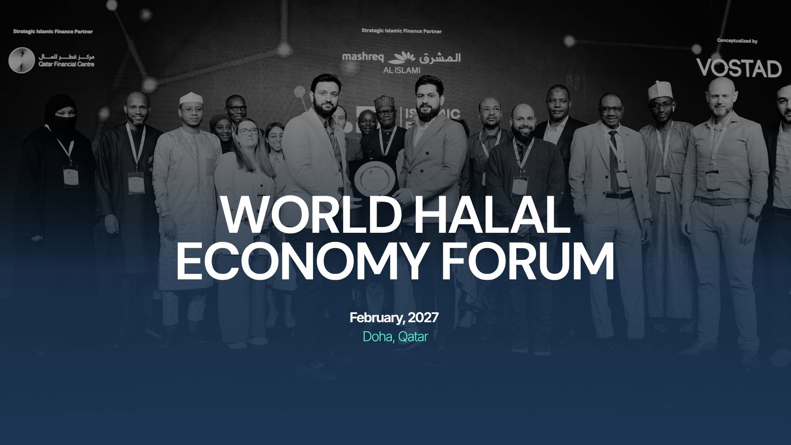
Edition 10
World Halal Economy Summit
Doha · 2027
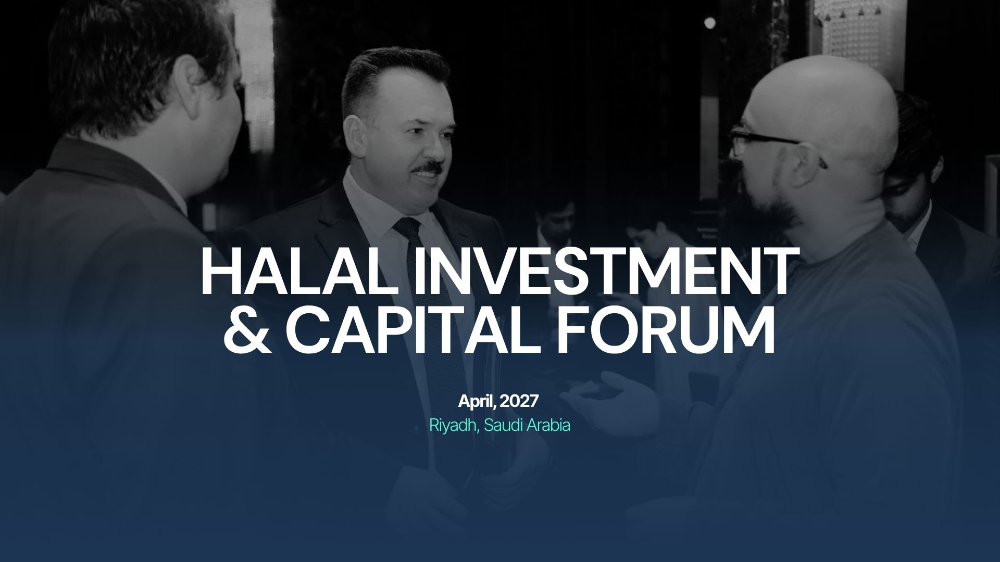
Edition 11
Halal Investment & Capital Forum
Riyadh · Apr 2027
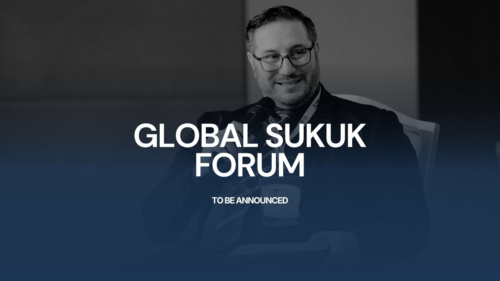
Edition 12
Global Sukuk Forum
TBA
3 — Why Now
The global Islamic finance and fintech landscape is undergoing a structural shift.
Islamic fintech is expanding across multiple regions
digital assets and tokenization are reshaping capital markets
financial centres are actively competing for positioning in these domains
QFC has already established the regulatory and institutional foundation.
The opportunity now is time-sensitive:
→ to establish leadership before positioning consolidates elsewhere
4 — About Halalverse
Halalverse operates at the intersection of:
Islamic finance
emerging technologies (AI, blockchain, digital assets)
global market ecosystems
It has evolved from a series of focused forums into a structured platform designed to:
connect capital, companies, and institutions
facilitate strategic engagement
support cross-border market expansion
Its operating philosophy is based on:
→ quality over scale
→ curation over volume
→ execution over visibility
5 — Track Record & Evolution
A sequence of focused initiatives.
Halalverse has developed through a sequence of focused initiatives:
Blockchain for Islamic Finance Summit (BIB)
World Islamic Fintech Forum
World DeFi & NFT Summit
Halalverse (Web3 & Impact)
Sustex (Technology & Sustainability)
World Token Summit (RWA Tokenization)
This progression reflects a clear evolution:
from event-led engagement → to ecosystem platform
with consistent focus on Islamic finance, technology, and capital markets.
6 — The Opportunity for Qatar
Qatar has the infrastructure, regulatory clarity, and institutional strength.
The next step is to establish:
→ a global convening layer
Through a structured platform, Qatar can become:
a reference point for Islamic fintech
a hub for capital markets dialogue and innovation
a meeting ground for institutions, investors, and technology providers
This is both a positioning opportunity and an ecosystem opportunity.
7 — The Strategic Gap
Despite strong foundations, there is currently:
no continuous global platform anchored in Qatar
limited structured engagement across international ecosystems
fragmented visibility in global Islamic finance dialogue
As a result:
→ Qatar participates in global discussions
→ but does not consistently host them
8 — The Halalverse Qatar Platform
A QFC-led initiative designed to create a continuous ecosystem loop.
Global Forums → Executive Engagement → Global Outreach → Deal Flow → Training → Repeat
This structure ensures:
continuity of engagement
ecosystem depth
long-term positioning
9 — Global Forum Series
All flagship forums hosted in Qatar.
Islamic Fintech Forum
Focusdigital banking, fintech infrastructure, AI in finance
Outcome→ institutional collaboration and innovation alignment
Global Sukuk Forum
FocusIslamic capital markets, structuring, and future instruments
Outcome→ strengthened capital markets positioning
World Islamic Economy Forum
Focuscross-sector engagement across finance, trade, and technology
Outcome→ global economic positioning
→ Qatar as the host of the global Islamic economy conversation
Ecosystem Loop
A continuous platform of engagement.
This structure ensures continuity of engagement, ecosystem depth, and long-term positioning.
10 — Ecosystem Activation
The platform extends beyond forums.
Year-round engagement through structured initiatives.
Executive Roundtables
Closed-door, high-level institutional engagement.
Global Roadshows
Targeted international outreach to attract companies and capital.
Executive Training
Programs for banks, regulators, and institutions.
Deal Flow Facilitation
Structured pathways for partnerships and market access.
Market Engagement Signals
Initial discussions indicate early interest from:
fintech firms in Southeast Asia exploring GCC expansion
GCC-based investors and family offices evaluating structured deal access
infrastructure and technology providers seeking regulated market entry
These signals reinforce the relevance of a Qatar-based platform.
11 — Why Qatar Wins
Qatar's positioning offers a differentiated advantage.
strong regulatory framework
institutional credibility
neutral and globally connected positioning
alignment with sovereign and long-term economic strategy
This enables Qatar to act as:
→ a trusted and stable platform for global Islamic finance engagement
12 — What This Delivers to QFC
Global Positioning
Recognition as a leading hub for Islamic fintech and financial innovation.
Ecosystem Growth
Attraction of high-quality institutions and market participants.
Strategic Engagement
Meaningful partnerships and cross-border collaboration.
Competitive Advantage
Stronger positioning relative to other financial centres.
Platform Ownership
QFC anchors a long-term ecosystem, not a one-off initiative.
Expected Outcomes
The platform is designed to deliver:
senior-level engagement across financial institutions, regulators, investors, and technology providers
high-value institutional dialogue and collaboration opportunities
a structured pipeline of cross-border engagement and capital discussions
strengthened positioning of Qatar as a global hub for Islamic finance and fintech
The emphasis is on quality, relevance, and strategic impact.
13 — Implementation Model
QFC-led | Halalverse as Strategic Execution Partner.
QFC
strategic leadership
branding and positioning
regulatory alignment
stakeholder access
Halalverse
program design
global outreach
participant curation
end-to-end execution
ecosystem coordination
14 — Governance & Platform Integrity
To ensure institutional alignment.
participation will be curated for quality and relevance
engagements will align with QFC priorities
all activities will operate within QFC's regulatory and brand framework
A structured governance approach ensures:
→ credibility
→ control
→ long-term trust
15 — Commercial & Engagement Model
Two structured engagement models.
Recommended
Model A — Strategic Platform Partnership
A long-term platform engagement with participation in ecosystem value creation.
full platform execution
year-round ecosystem activation
alignment with long-term strategic positioning
QFC participates in the economic upside of the platform across:
forums
training
ecosystem partnerships
Model B — Program Engagement
A defined execution-focused model:
structured scope
flexible engagement
no participation in platform economics
Value Perspective
This initiative should be viewed as:
→ ecosystem infrastructure
→ platform investment
not standalone event cost
not short-term marketing activity
16 — Why Halalverse
Halalverse combines structure, network, and execution.
domain focus across Islamic finance and emerging technology
experience in building high-level forums
global ecosystem connectivity
execution capability across multiple markets
→ Structure + Network + Execution
17 — Future Vision
This initiative begins with Qatar.
Over time, it can evolve into a connected ecosystem across multiple markets.
Qatar becomes:
→ The origin and anchor of a broader global platform
18 — Next Steps
01strategic alignment discussion
02scope refinement
03partnership confirmation
04program initiation
Final Positioning
QFC-led. Halalverse executed. Qatar positioned.
This initiative enables Qatar Financial Centre to move from participation to leadership — establishing a platform that strengthens its global relevance and ecosystem impact.